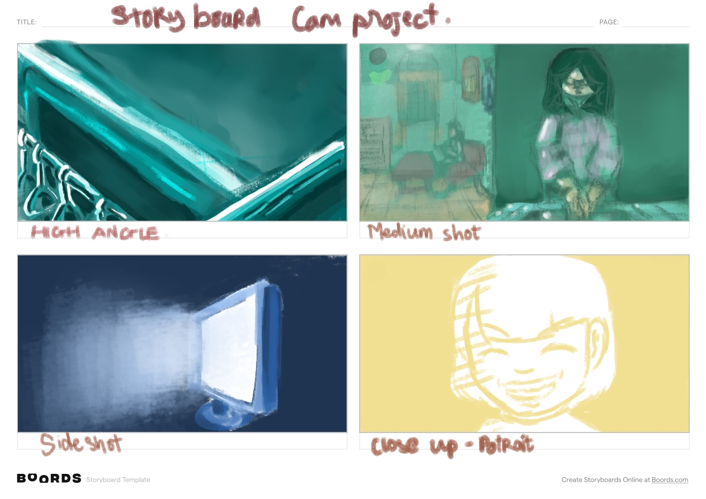

Day 10: MiniVy (V.O)

The lighting in my project.
I was so fascinated when first watching In the mood for love and Chunking express.

The lighting in my project.
I was so fascinated when first watching In the mood for love and Chunking express.
...

The continuation of "The Lemon I dropped on the tree": Just another nice day:
Enigma: Why is noone on the scene? Why does the TV opened and what show does it played?
The third still (mid-shot) is in the second act, when the character opens a show of professors helping parents educate children in a linen way, and behind the background is the main character shouting and hitting her child brutally, and the son tries to silence his crying. The scene was not focusing on the actions but rather on the sounds that are happening suggesting a certain enigma of what is running visually on the other part of the scene, hyping the curiosity in the audience. It was the image that I was proud of the most - that it exceeded any of my expectations because the light from the TV on the sofa blended so well together that without any filter, it was still a great picture. Chiaroscuro was heavily applied to this picture, and sure the effected of it will be taken for apply again i the future.
Enigma: Who is the boy? Why the boy is laughing?>
The last picture is what I felt that disgusted me the most. No, not because of the model, but the filter I applied on it that maybe could have been used better if I rather applied a vintage filter on my image in the first take. This is the last moment in the last arc - arc three when the mother had gone completely insane and killed the kid but unsuccessfully in real life - she thought she had murdered him and fainted, and in her dream, the boy maniacally laughed at her for doing so and her seeing him in a yellow filter, more and more vivid on each stab she stabbed on him. Yellow, as lemon juice, and lemon is the mother's perspective of her son - she envies that her son could freely do things that she couldn't do due to her being a single mom that she couldn't deny, and he is the most acerbity thing she ever tasted throughout her life.
A hypothetical project that will never be made.
Let just thinking about the first time you - instead of taking landscape photos, you choose to include them with people. How does it feel? Horrible right? It was me, facing my first ever media project as an always-assuming-to-be-a-writer. Only with my phone and my nervousness about socialisation, I am good to go.
I chose Experimental, Drama, Psychological, Horror and Thriller for the hypothetical movie project - it is the most comfortable genre for a beginner like me. It is about a woman who tried to provide for her son with her unstable mental health of postpone depression, she always saw her son as an obstacle she needed to get rid of after she got assaulted but couldn't get rid of him herself, and decided to treat him normally like how the media portrayed - a mother - along with a feeling that she is not belong to this world because she could not love the child. But she could not fully control herself and being manipulated by her anger and madness increased years and years without anyone to share, and to the point that she thought she killed her son and drown herself in her unbearable craziness. The project's title is The Lemon I Dropped on the Tree - as the mother associated her son with a bitter lemon that she dropped, and she tried to put it on the tree like normal since she is not ready to take it yet.
The movie title? Oh, I just made up within maybe seconds. But the plot? Only god knows how long. I was planning to shoot based on the storyboard I made up on Day 2 with my made-up storyline, and then post it on the blog for the done-of-business, but if the movie didn't have its title, it didn't consider one. Just a picture met my goal in the storyboard on the second day - which is great, because art making process is always unpredictable. In each picture will have it own enigma - I found that I am not used to describe my work as deep as this before.
Enigma: What is so important about this bus?
I kinda love this picture, although I planned to picture it in the evening. I choose the first still picture (for the opening scene of the hypothetical movie) to be inspired by Perfect Blue - a movie by Satoshi Kon about a singer who changes her career path to be an actor and walks into her insanity corridor of existential crisis after finding out that she is being stalked and the reason is her job-hopping - because it was the biggest inspiration for the plot and I want to indicate that. This was a reference to the highway train scene. I used a high-angle shot, not to show the character to introduce the era and the atmosphere of the film and also to symbolize the main character's feeling of not fitting in with people around her. The eerie blue of sadness sets down the character's view of life as lifeless and full of sadness.
Enigma: Who is the women? What is she doing? Who is she cooking for? How will she affect the story?
The second picture was in Act 1 also but after the opening scene. It was about the main character when she cooked dinner for her son. It was intended for the woman to be blocked by the surrounding stairway and the war, indicating herself as she is inside a cage that she made up by her own humane and by society's opinions. Using green as the colour of growth - and cooking had been seen as a symbol of it, but the colour tone made up a nostalgic yet uncomfortable feeling (of an alert of toxicity and bitterness) as this was through the eyes of her son when looking toward her. The black nylon layers covering the window, though it's not an intentional objects but made up of a feeling of losing the concept of time - seeing everything as dark, and gloomy.
From what I had observed during my creative journey, which is only 6 years of knowing completely none to the current state, real life is the biggest inspiration for media in general, as the creative process always had its root in realism at some point. I want my film to be a reflection and exaggeration of the Vietnamese middle class in real life - of what I had seen thousands of times but had never wanted to look back. I found two apartment that align with my vision.
School is a familiar place with me, but I don't want to link my film with the school atmosphere whatsoever. , my school is rather a high-class place with the average middle-class Vietnamese citizens and it has a different culture of study compare to public schools. It didn't reflect my sight - telling the story that our current life is what they haven't even thought of. Filming at school creates an invisible limit in ideas: people will too cling into it that it will devaluate their project - since every project looks the same.
Binary opposition is an important part to hook audience to the film. This appears as early as human know how to tell a story with words, in the most basic genre: Superhero - with the good versus the evil, the weak versus the strong. Nowadays, it was even more complex, neither good nor bad, for example, the film “Vivre sa Vie” (1962) by Jean-Luc Godard is about the tied life that you are currently in with responsibilities as the social - choose to conform - but easier to survive or a more challenging one with an abstracted future, but you think it will be better for you in the future - people could said you are reckless. I was interested in movies talking about breaking the machine, crossed the line, becoming deviant and the consequences, whether a good ending or not is on the end of the road and the movie that brought me into it was The Matrix, then 1984 and The Truman Show. It was the topic that every human being ever asked themselves once in a lifetime, even if it was just a thought passing by.
The binary opposition that I want to address in the three topics in a family - parental or sibling relationship: over-indulgent vs abusive, love vs hate and awaken vs insanity. In the opening scene, it was the 2 first binary oppositions that took part in the plot. A reason why I so interested in it is the moment read a book about the psychology of the abusive and their victims: the abusive one could make a great first impression on the victim as a perfect lover for instance, but then when living together, the abusive will use violence against the victim, and after that apologizes the victim and overindulged the victim as a way to gaslight - the circle then repeated. The abuser and the victim both crossed the line of a healthy relationship but they lied to themselves that they are not. I want to explore that in a sibling relationship as a reflection of the relationship between my brother and me.
As the one had addicted to tension through silence in movies and games, I want to minimise non-diegetic sound to the least - that means it will be mostly diegetic sound. I think non-diegetic sound - such as a score, or a voice-over - could be used at the beginning of the movie (like before or in the credit part when they introduce the directors, writers, producers and the movie title) as a way to settle the mood for the beginning of the film.
Maboroshi, Eraserhead, Fight Club, In the Mood for Love and Raise the Red Lantern are my inspirations for using sound. In the Mood for Love is the biggest inspiration for the diegetic sound - the recreation of the atmosphere of a typical 80s apartment in Taiwan and East Asia in general. Vietnamese residential areas for the low and middle class had the same atmosphere too, and I want to duplicate it in my project.
Fight Club - on the other hand - is the inspiration for the voice-over in the opening scene, as the narrator introduces us to his life before he is tied up by Tyler Durden and comments about it, the criticism about overconsumerism which is the whole theme of the movie.
There was a crazy idea in my head: I would use a separate microphone to record characters dialogues (the mini microphone that could be attached to clothes) and a different one to record the environment sound (might be the camera), and choosing what sound we want by separate each sound and edit them together on the software - to make the sound as realistic but also romantic in the final product.
I was inspired by mostly movies and art throughout my creative journey. Mostly Western movies - I am not the kind of person who consumes a chunk of films but enjoys watching alone and eating popcorn. I found that I like drama - the kind that I could find beautiful melodies from composers, props and characters that are intentionally and artistically settled by the directors, and its way of storytelling will keep the audiences rewatching and analysing the dialogue to understand its layers of meaning. Maboroshi left the biggest impression on me in my creative journey and changed my direction from being a comic artist to a role linked with cinema. Because of its cinematography, the story of a woman who could not overcome the sadness of losing her previous husband even after remarrying and how the film's plot line breaks the norms of a loss story will direct the character into finding a way to heal their mentally ill spirit and succeed like in Eat, pray, love.
I was inspired much by the voiceover from Fight Club for the opening scene - a non-diegetic sound - but then shown to be a diegetic sound by the character putting off her earphones as I was inspired by the opening scene of Perfect Blue. The voice-over part will emulate the slow zoom from the face to the background from Coppola's The Godfather - the first part for the start of the opening scene. It will make the introduction of a character and the genre of the movie simultaneously, and also raise the dramatic set of the film from the start - the character is introduced to the war.
I want the camera set to be like Zhang Yimou's "Raise the Red Lantern" as Songlian walks inside her husband's mansion as it is closed, creating an intense atmosphere like you are in a prison. I want my project to always have some tension in even the happiest scene.
The opening plot is going to be a metaphor for the future plot like Maboroshi from Hirokazu Kore-eda. In the opening of the movie, the grandma of the husband says she wants to die in her hometown without any reason no matter how her granddaughter tries to prevent her from doing so, and in the end, the granddaughter lets go - which tells us that this story is related to death the mourning of those who are alive.
Maboroshi
The full camera project will be here soon. Please wait!
Storyboard of my camera project.
I had created a storyboard for my camera project to visualise the overall project. I got inspired by the use of color of Wong Kar Wai (2nd image camera set - In the mood for love & color - happy together). I got the most influenced is the style of 80s-90s anime use of color and camera settle. (1st - camera set - inspired by Perfect Blue of Satoshi Kon), and games too - Devotion from Red Candle (3rd - the use of color, idea) and the use of yellowish color and art of Banksy (he is a public artist) for the 4nd picture.
Because of the Yagi storm and IELTS exam practice, I had a difficult time trying to find the right time, even I had the location. I was too nervous to take a photo in public, so I asked my family members to be my model.
I had used my phone (Realme C35) to take the photo - although with people it was one of the worst cameras on the phone ever except for a feature phone, that is everything I got, I had no problem with it since I had never been used to a high-end quality camera before. I opened the camera app and set it to the 3 grids-filter, flipped the phone horizontally and ran out to look for places. I was humbled that finally, I had a chance to use what I had learned on Studiobinder (I had subscribed to their channel but mostly for how to build a plot only and rarely looking at how to film with a camera) to practice - but turn out it was not. The unstable of the bus was inevitable, and the setting of the light wasn't like what I had planned.
I used filter a lot because I don't know how to do the light with limited bugget, mostly through the art app named Krita. I tried with cold pallete and hot one too, but turn out that I don't know how to use these hot color effectively. I was tried different filter, and found that not every filter - although look quite artistic, but not really practical when making a cinematic movie and it lead me to a change of genre for the final product than what I was planning: to not include surrealism. I found that technology is one of my weakness. But what I knew is the technology will be better, even better.
This is my first time writing a blog. I had deduced a conclusion: freely making what you want to display from scratch is more challenging than using the basic assets, but the curiosity and the need to create something true to my vision had led me to dare the unknown.
I started A-level media studies after just watching the opening scene of "The Good, the Bad and the Ugly." - as the fast-paced, camera and violent plot inspired me and led me to the world of media itself. I was also inspired by the artists who were influenced by movies and want to study how can they apply cinematic storytelling to their projects: Satoshi Kon, Hirohiko Araki, Tatsumoto, etc. I am a thriller and drama fan and enjoy grotesque artwork whatever the form it is ( I love Junji Ito's art, H.R. Giger's designs of biomechanism and David Lyncher's character design for his short works on YouTube)
Society of the Snow - Netflix.
I was impressed by films randomly suggested to me by Netflix or Mubi, as those are the two only live-streaming services I could reach. About Netflix, I am interested in the Society of the Snow and All Quiet at the West Front - which was awarded an Oscar; Pluto, Forest Gump, Fight Club. In Mubi, fantastic planet was what attracted me the most. I was introduced to Wong Kar Wai films: Happy Together, Chunking Express and In the Mood of Love. Raise the Red Lanterns was there too.
All of the movie I watched had led me to the world of arts: niche - or experimental - film, to drown myself in the story that the screenwriters and the directors had created.